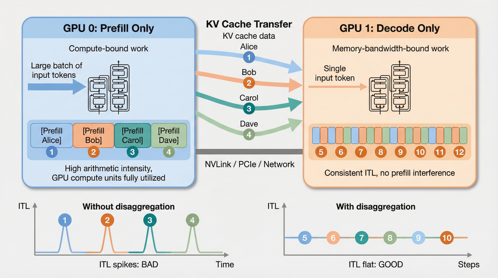

Disaggregated Serving
A production LLM server is really two very different machines wearing one name: a prompt-eating prefill machine and a token-streaming decode machine. Disaggregated serving separates them so each can run at its natural speed.
One model, two workloads
Autoregressive inference has two phases. During prefill, the model processes the entire prompt and creates the first KV cache. During decode, the model generates one new token, appends one new KV entry, and repeats. These phases stress the GPU differently.
Prompt ingestion
Input: many tokens. Output: first logits and a complete KV cache for the prompt.
Good at: large batches, chunky work, high GPU occupancy.
Token streaming
Input: one token per sequence. Output: one token per sequence, repeated many times.
Good at: stable cadence, continuous batching, protected TPOT.
Prefill wants big chunks. Decode wants rhythm.
For a single request, prefill happens once, while decode happens once per generated token. That means a long prompt creates a burst of compute at the beginning, and a long answer creates many small decode iterations afterward.
decode cost ≈ process(1 new token) × output_tokens
serving pain ≈ prefill bursts interfering with decode rhythm
Request arrives
Prompt length and SLO are estimated.
Prefill runs
Prompt tokens create the initial KV cache.
KV moves
The cache becomes the state needed by decode.
Decode loops
One token per sequence per iteration.
Tokens stream
The user sees output while decode continues.
Disaggregation only makes sense after you understand the engine loop.
A modern vLLM-style server is not a simple web process that calls model.generate(). It is a continuously running scheduler. At every step, the engine chooses which requests enter the batch, updates KV block metadata, prepares compact GPU inputs, runs a flattened forward pass, samples tokens, and then repeats.
Waiting queue
New prompts, resumed requests, and preempted requests compete for a token budget.
Scheduler step
Chooses prefill chunks and decode tokens subject to memory and token limits.
Metadata
Builds positions, slot mappings, block tables, and attention metadata.
Forward pass
Flattens all active sequences into one compact super-batch with paged attention.
Sample token
Extracts last-token states, samples, appends KV, and returns to the scheduler.
Continuous batching
After every engine step, finished requests leave, new requests can enter, and active requests continue. There is no need to pad every sequence to the same length; paged attention and attention metadata keep sequences separate inside one flattened batch.
Paged KV memory
Each request owns logical KV positions, but the physical KV cache is stored in blocks. The scheduler updates the block table, and the attention kernel follows that mapping during the forward pass.
Chunked prefill is the local fix. Disaggregation is the architectural fix.
Before splitting workers, vLLM can reduce interference by cutting a long prompt into smaller prefill chunks. Instead of letting one 8K-token prompt consume a whole step, the scheduler caps how many new prompt tokens can be processed in one iteration. This keeps decode tokens moving, but the same GPU pool is still sharing two incompatible workloads.
Chunked prefill helps TTFT fairness
It prevents a single long prompt from blocking every other request for a very large engine step.
It does not remove resource mismatch
Compute-heavy prefill and memory-heavy decode are still sharing one worker's GPU memory, queue, and scheduler.
Disaggregation adds a new cost
Once prefill and decode live on different workers, the KV cache must move across the fabric before streaming starts.
In a unified server, prefill and decode fight each other.
When both phases run on the same GPU pool, a long prefill can occupy GPU time while active users are waiting for their next streamed token. The symptom is simple: the first user already got a response started, but suddenly the stream stutters because another user's long prompt entered the batch.
Separate pools, explicit handoff.
Disaggregated serving creates dedicated prefill workers and dedicated decode workers. The router sends prompt-heavy work to the prefill pool. Once the initial KV cache exists, the system transfers it to a decode worker that owns the streaming loop.

The picture to remember. The left worker does high-arithmetic-intensity prefill for many input tokens. The right worker does memory-bandwidth-bound decode for one token at a time. KV cache transfer is the bridge. Without the split, ITL spikes whenever long prefills enter the unified worker; with the split, decode cadence stays flatter.
Ingress router
Classifies prompt length, priority, and estimated output length.
Prefill workers
KV transfer plane
Decode workers
Prefill pool
Optimized for large chunks, high arithmetic intensity, prompt batching, and TTFT reduction.
Decode pool
Optimized for steady token cadence, continuous batching, memory bandwidth, and P95/P99 TPOT.
KV transfer plane
The new tax. Disaggregation only works if moving the KV cache is cheaper than letting prefill disturb decode.
| Component | What it owns | Production concern |
|---|---|---|
| Router | Admission, phase placement, worker choice, request state. | Must not sit on the KV data path after handoff. |
| Prefill worker | Prompt execution, first logits, temporary prompt KV blocks. | Needs high compute throughput and prompt batching. |
| Decode worker | Streaming loop, persistent KV state, token cadence. | Needs memory bandwidth, stable queues, and enough KV capacity. |
| Connector | KV movement from producer to consumer. | Needs fast local fabric: NVLink, InfiniBand, or high-speed Ethernet. |
The KV cache is the toll you pay to disaggregate.
After prefill finishes, the decode worker needs the request's KV cache. The size is predictable from model architecture and prompt length.
Interactive KV transfer calculator
Defaults are close to a Llama-70B-style GQA model: 80 layers, 8 KV heads, 128 head dimension, BF16.
Transfer estimate
Network ladder for a 1.34 GB KV cache
For a Llama-70B-style model, a 4K prompt creates roughly 1.34 GB of KV cache. On ordinary networking this is painfully slow; on local datacenter fabric it becomes plausible.
| Fabric | Approx bandwidth | Transfer time for 1.34 GB | Verdict |
|---|---|---|---|
| 1 GbE | 0.125 GB/s | ~10.7 s | Not viable for interactive serving. |
| 10 GbE | 1.25 GB/s | ~1.1 s | Often too slow for TTFT budgets. |
| 100 GbE | 12.5 GB/s | ~110 ms | Possible with careful queueing. |
| InfiniBand HDR | 25 GB/s | ~54 ms | Production-relevant. |
| NVLink / same node | hundreds of GB/s | few ms | Excellent if placement is local. |
The handoff is a protocol, not just a copy.
In a disaggregated vLLM-style design, KV transfer is coordinated around model execution. The prefill worker produces KV blocks; the decode worker reserves space and waits for those blocks; once loaded, decode proceeds and the external KV is consumed only once for that request.
Allocate
Decode worker reserves KV blocks for the incoming request.
Produce
Prefill worker creates K and V tensors for every prompt token and layer.
Connect
Router coordinates the producer and consumer; data path can be direct.
Load
Decode worker imports the KV blocks before the first decode step.
Decode
Now the request behaves like a normal local decode request.
What can go wrong?
KV blocks may arrive late, decode memory may be full, a prefill worker may finish before a decode slot is ready, or network congestion may turn a clean architecture into a TTFT problem.
What must be measured?
Time spent waiting for prefill, time spent transferring KV, decode queue delay, KV memory occupancy, and the number of requests that miss their SLO because of handoff.
Yes: vLLM and SGLang both have disaggregated serving paths.
This is no longer only a paper architecture. It is emerging in real serving stacks, but it is still an advanced deployment pattern: you need multiple instances, a router or proxy, KV transfer configuration, fast local fabric, and careful observability.
vLLM status
vLLM documents disaggregated prefilling as experimental. The implementation runs a prefill instance and a decode instance, then transfers KV cache through connectors under vllm/distributed/kv_transfer. Available connector examples include NIXL, LMCache, P2P NCCL, Mooncake, FlexKV, and offloading connectors.
vLLM Router
The vLLM Router is a state-aware load balancer for large deployments. Its public repository describes support for load balancing, service discovery, health checks, metrics, and prefill/decode disaggregation.
SGLang status
SGLang has documented PD disaggregation and also EPD disaggregation for multimodal workloads, where the encoder, prefill, and decode stages can be separated for VLM serving.
Minimal SGLang single-node sketch
SGLang has the cleanest starter commands today. The basic shape is: launch one server in prefill mode, one in decode mode, then put a small load balancer in front.
# 1. Prefill worker python -m sglang.launch_server \ --model-path meta-llama/Llama-3.1-8B-Instruct \ --disaggregation-mode prefill \ --disaggregation-transfer-backend nixl # 2. Decode worker on another GPU / port python -m sglang.launch_server \ --model-path meta-llama/Llama-3.1-8B-Instruct \ --disaggregation-mode decode \ --port 30001 \ --base-gpu-id 1 \ --disaggregation-transfer-backend nixl # 3. Lightweight load balancer / front door python -m sglang.srt.disaggregation.mini_lb \ --prefill http://127.0.0.1:30000 \ --decode http://127.0.0.1:30001 \ --host 0.0.0.0 \ --port 8000
vLLM production shape
vLLM's production setup is connector-dependent. The stable mental model is the same: prefill is the KV producer, decode is the KV consumer, and the proxy/router orchestrates the two-phase request. Use the official example scripts for the exact connector-specific JSON.
# Conceptual vLLM layout. Fill connector JSON from the official example you use. # 1. Prefill instance: computes prompt KV cache vllm serve $MODEL \ --port 8100 \ --kv-transfer-config '{"kv_connector":"NixlConnector","kv_role":"kv_producer", ...}' # 2. Decode instance: receives/loads KV, then streams tokens vllm serve $MODEL \ --port 8200 \ --kv-transfer-config '{"kv_connector":"NixlConnector","kv_role":"kv_consumer", ...}' # 3. Router/proxy: OpenAI-compatible entry point # Routes request -> prefill -> decode, tracks worker health and queue state.
Production checklist
Useful tutorials and docs
| Resource | What to use it for |
|---|---|
| vLLM disaggregated prefilling docs | Connector abstractions, official example paths, benchmarks, and implementation location. |
| vLLM Router | Production routing, load balancing, service discovery, and P/D-aware orchestration. |
| vLLM MORI-IO blog | Concrete single-node PD setup, read/write transfer modes, proxy, and RDMA handoff details. |
| SGLang PD disaggregation docs | Single-node and multi-node commands using Mooncake, NIXL, and other transfer backends. |
| SGLang EPD disaggregation docs | Encoder-Prefill-Decode separation for multimodal/VLM workloads. |
The router becomes part of the model server.
A disaggregated system needs placement decisions. The router estimates whether a request should go through the split path, stay local, wait for a free decode slot, or use a compressed/offloaded KV path.
| Request type | Routing choice | Why |
|---|---|---|
| Short prompt, short answer | Unified or local | KV transfer overhead may dominate. |
| Long prompt, interactive answer | Disaggregated | Large prefill should not disturb active decode streams. |
| Batch summarization | Prefill-heavy pool | Throughput matters more than token cadence. |
| Long multi-turn chat | Locality-aware | Keep KV close to the decode worker if the session continues. |
Independent scaling rule of thumb
For short prompts and long responses, allocate fewer prefill workers and more decode workers. For long prompts and short responses, allocate more prefill workers and fewer decode workers. The correct split is workload-dependent, which is the whole point: scaling the phases together wastes capacity.
| Traffic mix | Likely pressure | Pool shape |
|---|---|---|
| Chat assistant with long answers | Decode occupancy | More decode workers. |
| RAG over long documents | Prefill bursts plus KV transfer | More prefill workers; watch fabric. |
| Summarization batches | Prompt processing | Prefill-heavy, throughput-oriented. |
| Agent loops with reusable templates | Cache locality | Router should exploit prefix/cache reuse. |
When should you disaggregate?
Use it when
Prompts are long, traffic is bursty, decode SLOs matter, and you have enough requests to keep both pools warm.
Be careful when
Requests are short, traffic is low, network bandwidth is weak, or the KV cache is too large to move cheaply.
Measure these
TTFT, TPOT, P95/P99 latency, prefill queue delay, decode queue delay, KV transfer time, GPU utilization, and cost per generated token.
How this fits into the full vLLM stack
Disaggregated P/D sits beside other vLLM serving features. PagedAttention makes KV memory manageable, continuous batching keeps decode slots filled, chunked prefill reduces local interference, prefix caching avoids repeated prompt work, speculative decoding attacks decode latency, and disaggregation separates the two resource profiles when one pool cannot serve both cleanly.
Sources for further reading
This walkthrough builds on two excellent public explainers: JarvisLabs' article on disaggregated prefill-decode and Aleksa Gordić's deep dive into vLLM's engine, scheduling, paged attention, chunked prefill, and advanced serving features.